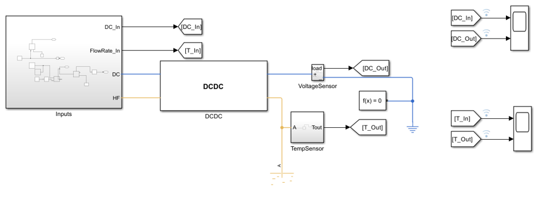
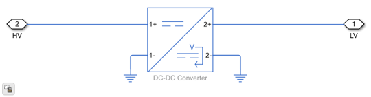

Estimate Vehicle Range with Auxiliary Loads
Vehicle workflow — Includes pump-driver electrical consumption in range calculations.
Electrical drive and command interface for coolant pumps
Component path: Components / PumpDriver

DC-DC converter component for the BEV system. Translates thermal management commands into pump speed signals for the coolant circulation pump. Two fidelity levels are available depending on whether thermal coupling is needed.
Use PumpDriver with the non-thermal auxiliary configuration. Use PumpDriverTh when converter heat and the coolant-system interface must remain part of the electrothermal plant.
| Model | Description | Use case | Templates | Documentation & files |
|---|---|---|---|---|
| PumpDriver | DC-DC converter with electrical conversion and control logic only. | Non-thermal auxiliary configurations. Pairs with PumpDummy. | VehicleElecAux | Documentation · Parameters |
| PumpDriverTh | Adds coolant system interface and thermal coupling to conversion. | Electro-thermal configurations. Pairs with the Pump component for full coolant loop. | VehicleElectroThermal | Documentation · Parameters |

Vehicle workflow — Includes pump-driver electrical consumption in range calculations.
Both fidelities share the same command boundary. PumpDriverTh adds a coolant interface for thermal coupling.
| Port / signal | Direction | Description |
|---|---|---|
| Thermal status | Input | System temperatures and thermal controller commands. |
| Pump enable | Input | Enable signal from the thermal management controller. |
| Coolant port (PumpDriverTh) | Conserving | Thermal-liquid interface for coolant system interaction. |
| Pump speed command | Output | Shaft speed setpoint for the Pump. |
Verify command-to-speed conversion and thermal coupling under controlled inputs.
Run the maintained PumpDriver test case before integration.
Pump | Radiator | Vehicle Templates